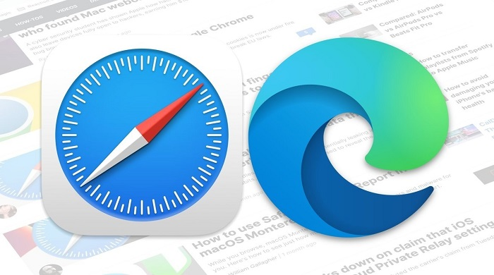

Tipos de navegador web
En la actualidad, existen infinitos tipos de navegadores web disponibles. Reconocer las diferencias y las ventajas que tiene cada uno de los navegadores de Internet más usados nos permite decidir cuál es la mejor opción según nuestras necesidades.
Antes de descubrir cuáles son los tipos de navegadores web que existen, debes tener en cuenta que, si bien todos son útiles para acceder a internet, el resto de funciones pueden variar entre sí. Por ejemplo, algunos navegadores web pueden enfocarse en la velocidad, en los servicios disponibles o en los temas de seguridad y privacidad.
>Navegadores Comerciales: Son propiedad de las empresas desarrolladoras de software y suelen integrar los distintos paquetes de aplicaciones de trabajo. Si bien la mayoría de los navegadores se ofrecen al usuario de manera gratuita, estos navegadores recopilan información sobre sus hábitos en línea y la utilizan para mostrarle publicidad. Por ejemplo: Internet Explorer, Safari.

>Navegadores de Codigo Abierto: Forman parte del software libre, es decir, que han sido desarrollados de manera cooperativa y le permiten al usuario un alto nivel de control sobre sus funciones, e incluso editar su código de programación para contribuir con su mejoramiento. No suelen ser propiedad exclusiva de ninguna empresa y se manejan con criterios menos comerciales, pero a menudo requieren de usuarios con cierto nivel de experticia técnica. Por ejemplo: Firefox, Basilisk.
Realmente no hay una respuesta concreta o un claro ganador, ya que poco a poco, los distintos tipos de navegadores se están especializando con unas características u otras.
-Chrome te da más velocidad que ninguno y es útil si estás acostumbrado a trabajar en entornos Google.
-Mozilla Firefox, de software libre, está adelantado con el tema de privacidad, y ofrece unas funcionalidades extras muy interesantes.
-Edge está enfocado a comercio electrónico y productividad vinculado con entornos Microsoft.
Como puedes ver, cada tipo de navegador está centrado en algo, y depende de ti ir probando las características de cada uno, y ver cómo funciona en tu equipo, para decidirte a elegir uno en concreto.
Conocer los distintos tipos de navegadores así como sus incompatibilidades es esencial a la hora de desarrollar una página web. No todos los usuarios de una sitio web visitan la página con el mismo navegador que los creadores utilizan. Tener esto en cuenta es vital para evitar que haya usuarios que abandonen la web porque no se puede visualizar correctamente.